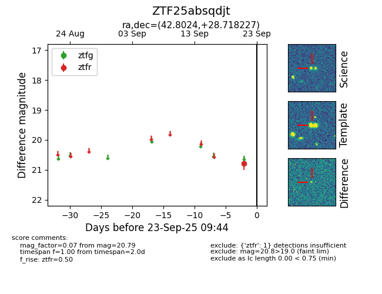

FINK: ZTF25absqdjt
Lasair: ZTF25absqdjt
ALeRCE: ZTF25absqdjt
ZTF25absqdjt (ztf,fink)
equatorial (ra, dec) = (42.8024,+28.71823)
galactic (l, b) = (152.4174,-27.20863)

last ztfr=20.79
1 ztfr detections